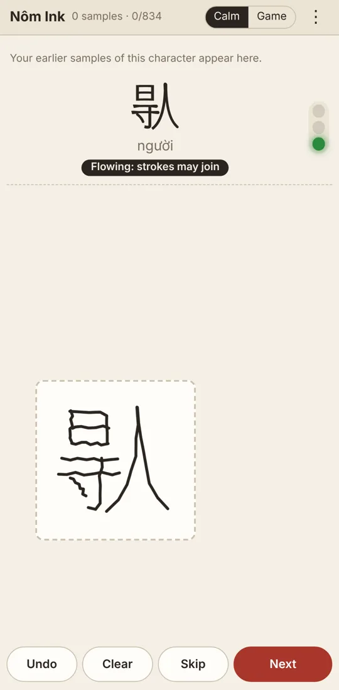
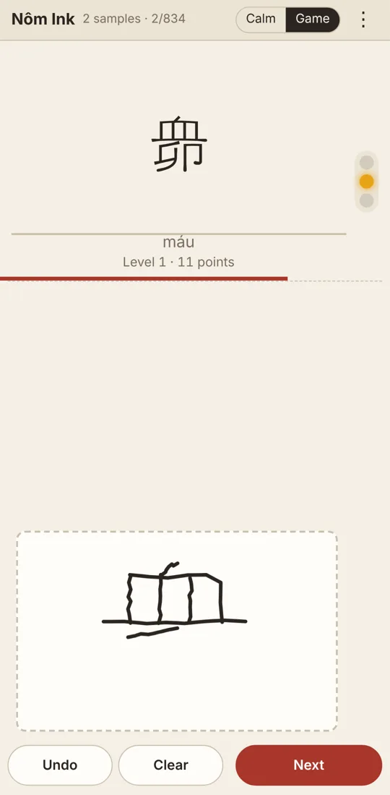

Calm
A character appears with its reading, you write it in the field below. The field changes its place and size with every character, so that the writing varies. A traffic light tells you when the character is complete.

Game
The character falls: write it before it lands. Every level is faster.

- The characters of the chunom.org dictionary; those with the fewest samples come first, never one right after the other.
- Your earlier samples appear small above the character.
- Everything stays on your device; the menu exports the samples as a JSON file.
- Works offline and can be installed as an app.